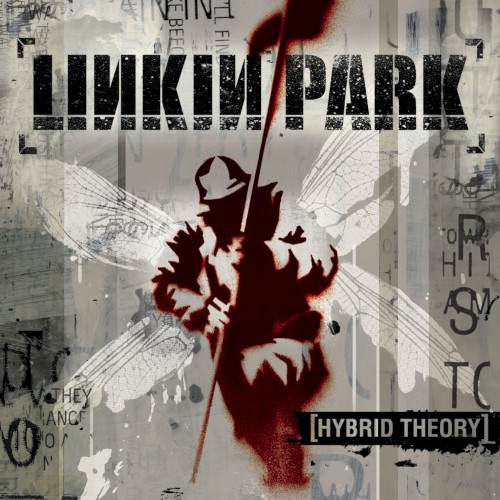
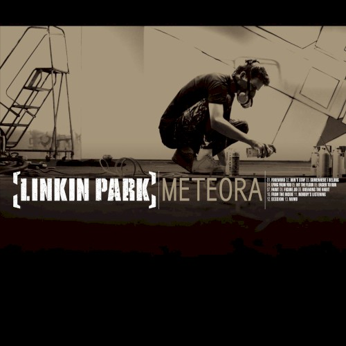
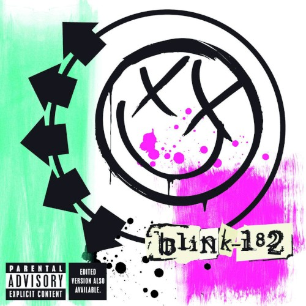
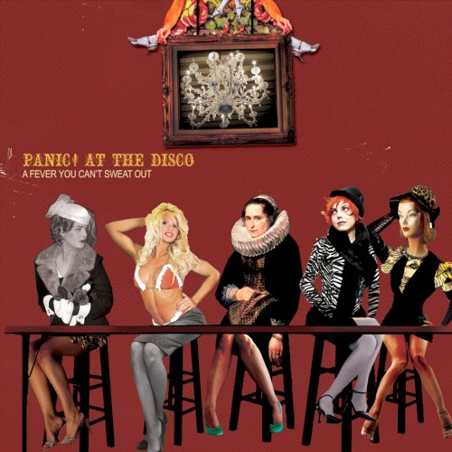
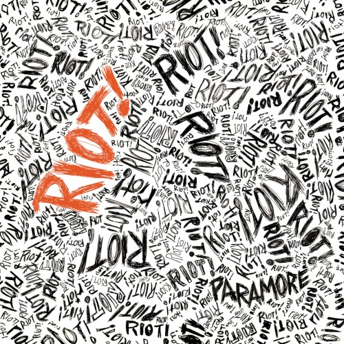
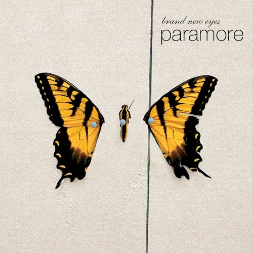
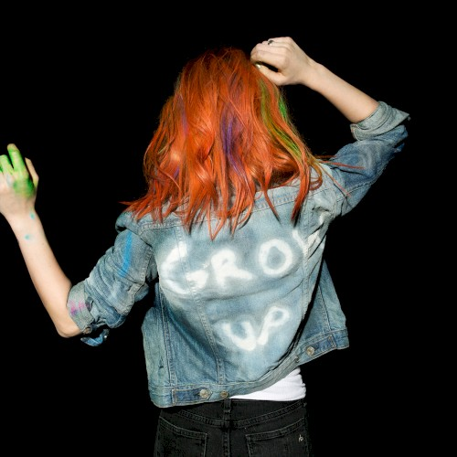

Wavelengths
Álbuns que me formaram







Role para ouvir
01
Hybrid Theory
Linkin Park · 2000
- Nu metal
- Rap metal
- Rock alternativo
Álbum de estreia do Linkin Park, com “One Step Closer”, “Crawling”, “Papercut” e “In the End”.
Mostrar mais
Produzido por Don Gilmore, o álbum mistura guitarras pesadas, rap, samples e eletrônica, com a voz de Chester Bennington alternando melodia e gritos e os versos de Mike Shinoda. “Crawling” venceu o Grammy de melhor performance de hard rock, e o disco virou uma das estreias mais vendidas do século. As letras falam de conflito interno, paranoia e frustração.
Clima do álbum
- Angústia
- Raiva
- Catarse
Faixa favorita: Papercut
02
Meteora
Linkin Park · 2003
- Nu metal
- Rap rock
- Rock alternativo
Segundo álbum de estúdio do Linkin Park, que estreou em primeiro lugar nos Estados Unidos, com “Somewhere I Belong”, “Numb”, “Faint” e “Breaking the Habit”.
Mostrar mais
De novo com Don Gilmore na produção, o álbum aprofunda a fórmula de Hybrid Theory, com mais eletrônica, cordas e samples sob as guitarras pesadas. As letras falam de vícios, hábitos autodestrutivos e da sensação de não pertencer, e “Breaking the Habit” troca as guitarras por cordas e batida eletrônica.
Clima do álbum
- Inquietação
- Vulnerabilidade
- Intensidade
Faixa favorita: Breaking the Habit
03
blink-182
blink-182 · 2003
- Pop punk
- Rock alternativo
Quinto álbum de estúdio do blink-182, mais sombrio e experimental, com “Feeling This”, “I Miss You” e “Down”.
Mostrar mais
Também produzido por Jerry Finn, o álbum troca as piadas por arranjos mais densos, camadas de estúdio e influências do pós-punk e da new wave, com participação de Robert Smith, do The Cure, em “All of This”. As letras tratam de saudade, relacionamentos e amadurecimento.
Clima do álbum
- Melancolia
- Saudade
- Maturidade
Faixa favorita: I Miss You
04
A Fever You Can’t Sweat Out
Panic! at the Disco · 2005
- Pop punk
- Emo
- Dance-punk
Álbum de estreia do Panic! at the Disco, com “I Write Sins Not Tragedies”, “The Only Difference Between Martyrdom and Suicide Is Press Coverage” e “But It’s Better If You Do”.
Mostrar mais
Produzido por Matt Squire, o álbum é dividido em duas metades separadas por uma intermission: a primeira é dançante e eletrônica, a segunda troca os sintetizadores por piano, acordeão e um clima de cabaré. As letras de Ryan Ross são teatrais e irônicas, cheias de referências literárias, e “Camisado” trata de alcoolismo na família.
Clima do álbum
- Teatralidade
- Ironia
- Energia
Faixa favorita: Camisado
05
Riot!
Paramore · 2007
- Pop punk
- Emo
- Rock alternativo
Segundo álbum de estúdio do Paramore, que levou a banda ao grande público com “Misery Business”, “crushcrushcrush” e “That’s What You Get”.
Mostrar mais
Produzido por David Bendeth, o álbum tem guitarras rápidas, refrões grandes e a voz de Hayley Williams no centro de tudo. As letras falam de frustração, relacionamentos e da vontade de não se encaixar, num retrato da juventude da banda naquele momento.
Clima do álbum
- Raiva
- Energia
- Juventude
Faixa favorita: When It Rains
06
Brand New Eyes
Paramore · 2009
- Pop punk
- Rock alternativo
- Emo
Terceiro álbum de estúdio do Paramore e o último com os irmãos Farro, com “Ignorance”, “Brick by Boring Brick” e “The Only Exception”.
Mostrar mais
Produzido por Rob Cavallo, o álbum foi gravado num momento de tensão dentro da banda, e isso aparece nas letras sobre conflito, confiança e reconciliação. Ao lado das faixas mais agressivas, a balada acústica “The Only Exception” mostra o lado mais delicado de Hayley Williams.
Clima do álbum
- Conflito
- Desabafo
- Esperança
Faixa favorita: The Only Exception
07
Paramore
Paramore · 2013
- Pop rock
- Pop punk
- Power pop
Quarto álbum de estúdio do Paramore e o primeiro sem os irmãos Farro, com “Now”, “Still Into You” e “Ain’t It Fun”.
Mostrar mais
Lançado em 2013, o álbum amplia o som da banda para o pop, o funk e o gospel. “Ain’t It Fun” venceu o Grammy de melhor canção de rock. As letras falam de recomeço, amadurecimento e crescimento pessoal.
Clima do álbum
- Recomeço
- Euforia
- Amadurecimento
Faixa favorita: Last Hope
08
That’s the Spirit
Bring Me the Horizon · 2015
- Rock alternativo
- Metal alternativo
- Rock eletrônico
Quinto álbum de estúdio do Bring Me the Horizon, que deixa o metalcore para trás, com “Throne”, “Drown”, “True Friends” e “Avalanche”.
Mostrar mais
Produzido pela própria banda, com Oli Sykes e Jordan Fish à frente, o álbum troca os gritos por refrões limpos, sintetizadores e uma produção mais pop. As letras falam de depressão, vício e da luta para seguir em frente, sempre com uma ponta de ironia já no título.
Clima do álbum
- Ironia
- Fragilidade
- Superação
Faixa favorita: Avalanche